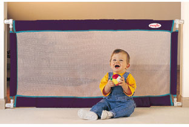

« Baby-Moon a success | Main | Found two pregnancy/parenting blogs in the Bay Area! »
July 25, 2005
Why are gates so ugly?
Although we won't need a gate for our baby until he starts walking (more than a year from now I guess), we decided to buy one for when our friends with toddlers come over (more on that later).
I went to citykids, where they had a very good selection, but I was really uninpressed with the choices. Some were very expensive for no apparent reason, some were bulky plasticky ugly, some were super-heavy...wood gate with an iron frame painted to look like wood, yuck!
Anyways, I was ready to give up when, in the corner, I noticed some smaller boxes...and found what I liked.

Extra-Wide Soft Gate by evenflo
Sold at Amazon for $39.99, it's nice and soft, it requires no screws, and it's low enough to go over it, so no need to move it at all. It looks pretty nice too I though.
Posted by patata at July 25, 2005 10:44 AM
Comments
I found that trying to wall off every danger area in our house was too much trouble. We opted for doorknob, cabinet and stove knob protectors, and a large playpen as a sort of permanent safe haven.
Here's the very child-friendly playpen we chose:
http://www.thingamababy.com/baby/2005/07/review_little_p.html
Posted by: AJ at July 28, 2005 12:13 PM